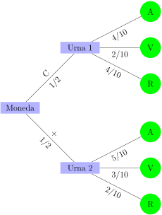

Sección 6 Experimentos compuestos
Experimentos compuestos.
Un experimento compuesto es aquel formado por varios experimentos simples, ya se realicen estos de forma simultanea o sucesivamente.
Si el resultado de un experimento simple no influye en los otros se dice que son independientes. En caso contrario son dependientes.
Subsección 6.1 Experimentos independientes
Ejemplo 6.1.
Lanzamos una moneda y un dado. Calcular la probabilidad de sacar cara y número par.
SoluciónLos sucesos son independientes ya que el resultado de uno no influye en el otro. Por lo tanto \(P(C\cap P)= P(C)\cdot P(P)= \dfrac{1}{2}\cdot \dfrac{3}{6}=\dfrac{1}{4}\)
Subsección 6.2 Experimentos dependientes
Ejemplo 6.2.
Tenemos dos urnas:

Lanzamos la moneda y si sale cara, extraemos una bola de la primera urna y si sale cruz extraemos una bola de la segunda urna.
- Hallar la probabilidad de que la bola sea azul si ha salido cara.
- Hallar la probabilidad de que halla salido cara y la bola sea azul.
Son experimentos dependientes ya que lo que suceda en el primer experimento influye en el segundo.
Para resolverlo hacemos un diagrama en árbol. Hay que tener en cuenta que la probabilidad de una rama es el producto de las probabilidades de esa rama.

- \(\displaystyle P(V \cap C)=\dfrac{2}{10}\)
- \(\displaystyle P(C \cap V)= \dfrac{1}{2} \cdot \dfrac{2}{10}= \dfrac{1}{10}\)